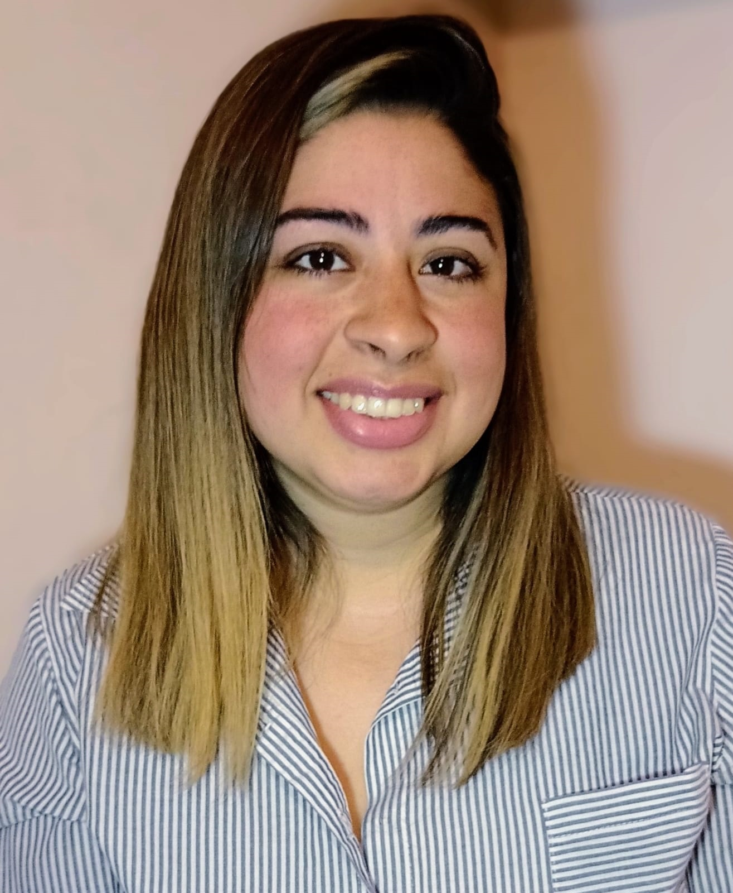

Claudia E. Santos
Diseñadora Web Fullstack Jr.
Sobre mí
Siempre estoy dispuesta a trabajar en equipo, tengo buen manejo de relaciones interpersonales siendo colaborativa y solidaria. Me adapto muy bien a los diferentes ámbitos laborales buscando superarme en todo lo que hago, aprendiendo y progresando. Mi objetivo profesional es seguir desarrollando mis habilidades y experiencias dentro de un equipo que comparta mis valores, entre ellos considero fundamental trabajar con compromiso, responsabilidad y objetivos claros.